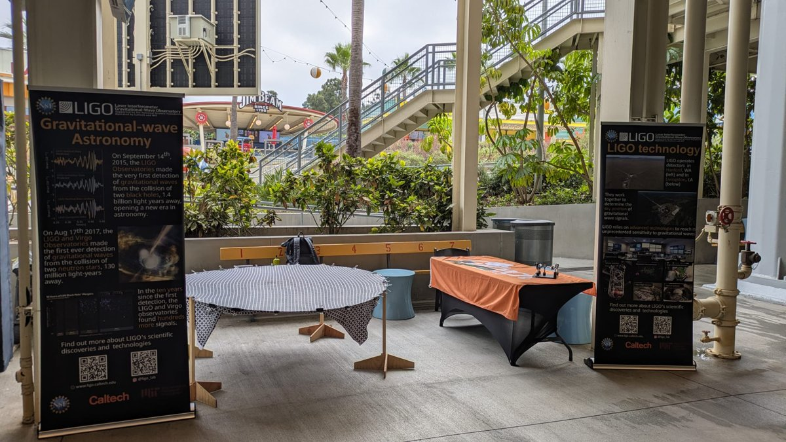

Teaching, Mentoring and Outreach
Work in progress
Teaching
I have been a teaching assistant for three courses:
- Experimental Physics, Engineering Bachelor, University of Trento (2016).
- Optical Laboratory, Physics Bachelor, University of Trento (2021).
- Electronics Laboratory, Physics Bachelor, University of Trento (2021 and 2022).
At Caltech, I have unfortunately not had the opportunity to teach. However, I am attending the Postdoc Pre-Faculty Pedagogy Preparation Program, which includes a one-week intensive workshop on transforming research into a course and writing a syllabus, practice guest lectures under the supervision of pedagogy experts, and seminars on reconciling teaching with artificial intelligence.
Mentoring
During the summers of 2025 and 2026, I mentored two students (Krzysztof Król, University of Warsaw, and Samantha Walker, Barnard College) through the LIGO SURF program, an intense 10-week program for undergraduate students. The results from summer 2025 contributed to a publication in a peer-reviewed journal.


Outreach
I have attended outreach events and visited several schools in Italy and in the U.S. During school visits, I show hands-on demonstrations: in elementary schools, the spandex universe, a stretched sheet that models how gravity curves spacetime; in high schools, a small interferometer to explain how GW detectors work.
In 2022, I participated in the theatre and science festival Theatre of Wonder (Teatro della Meraviglia) in Trento, presenting the work of Eunice Newton Foote, the first scientist to posit that rising carbon dioxide levels could increase atmospheric temperature and affect the climate!